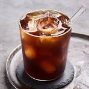
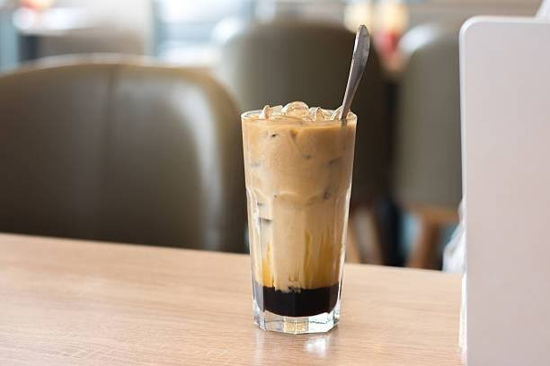
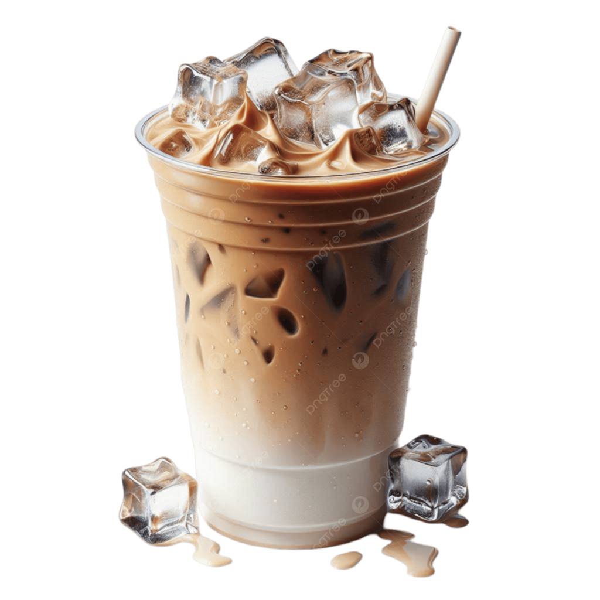
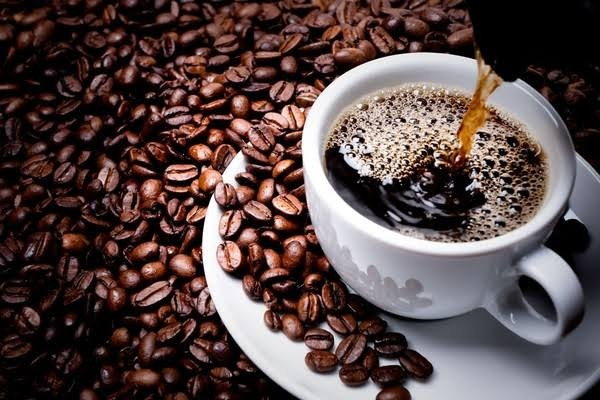

UMKM Batang
Galeri Produk
Lihat tampilan visual produk-produk unggulan kami yang dibuat dengan penuh cinta dari Batang.
Menu Kami
Foto produk dikumpulkan dari dokumentasi kedai dan aset foto untuk keperluan pembelajaran praktikum.



